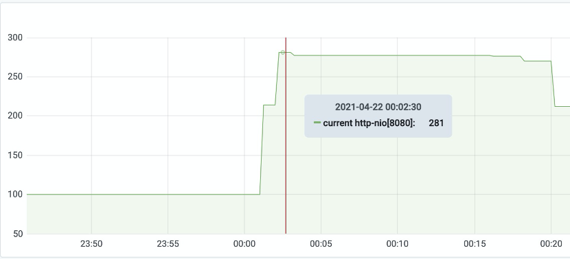

缺少数据库连接池导致的API调用失败排查
现象
在公司自己研发的网关上观察到在每天的某段时间内API调用失败量剧增，之后又缓慢恢复的情况。
观察网关日志
查阅日志发现，在同一时间段内，得到503 service unavailable的错误：
注意到在大量503出现之前，有少量502：

收集到的对应API调用则是：
而网关的逻辑是如果对API提供方（本例中是用户API）连续调用失败超过一定次数（目前设置是50次），那么就会对API进行熔断，直接返回503。
可以推断出在这段时间里，用户API处于不可用状态。
观察POA 控制台日志
的确能够看到和用户服务的通信错误：
且这种错误出现了600多次，集中在00:02 前后：
印证了上面的推断。
观察用户API的日志
出现大量从数据库连接池获取连接超时的异常：
总共1293多次，时间在00:01:20 ～ 00:02:30
可以看到用户API的数据库连接池配置的小了，从日志可以看到只配置了50，可以适当加大。
但是，用户API数据库连接获取不到的异常只会让请求响应500一类的错误，并不会造成 dialing to the given TCP address timed out 或者 connect: no route to host 的问题。需要进一步排查。
排查 connect: no route to host 的问题
如果你熟悉K8S，就会知道产生这个问题的可能性有两个：
- Pod重启了
- ReadinessProbe探测失败，K8S断掉通网Pod的流量
观察用户API是否重启过
查看日志，并没有重启过。
排查readinessProbe探测失败的原因
目前的readinessProbe的配置如下：
一个很典型的spring boot应用的配置。
但是很诡异的是，在K8S中，没有记录下Pod的readinessProbe探测失败的事件。
于是直接到Pod所在服务器上查看kubelet的日志：
docker logs --since '2021-04-21T23:55:00' --until '2021-04-22T00:20:00' kubelet 2>&1 | grep user-data-service
得到了相应的日志：
接下来找为何会探测失败，猜测两个原因：
- Tomcat的Http连接用满，新连接排队等待造成。
- Tomcat处于Full GC，整个JVM停顿导致超时
排查tomcat的http连接池
配置的线程数是800，在最高峰链接倏才只有<300，因此这个可能性排除。

排查tomcat的gc情况
发现内存使用情况正常，也没有触发过FullGC
思考一下
tomcat的http连接池够用，内存也够用，那么为何会产生readinessProbe探测失败呢？从下面起走了弯路。
观察内核日志
那么问题是否会出在内核上，跑到Pod所在服务器上查询：
journalctl --since='2021-04-21 23:55:00' --until='2021-04-22 00:20:00'
服务器1上没有问题，服务器2（因为总共有2个Pod，分别在不同服务器上）上有些貌似可疑的日志：
关键内容是：
slab_out_of_memory: 4225 callbacks suppressed
SLUB: Unable to allocate memory on node -1 (gfp=0x2088020)
cache: kmalloc-64(1701:d3f8dc94598f0a15cfbb6417c5117690af06c0554667b9334bfc20381e280c62), object size: 64, buffer size: 64, default order: 0, min order: 0
node 0: slabs: 399, objs: 25536, free: 0
这个错误的意思是内核内存不足，不足的原因可能是存在内存泄漏的情况。
但是服务器2有这个异常，服务器1上没有，因此大概率和readinessProbe探测失败不存在因果关系，因为只有两个Pod都探测失败的时候，才会导致本文一开始提到的问题。
回到 /actuator/health
到这里走到思路，那么看看spring boot actuator的源码，这里面的逻辑到底怎样的。
查看/actuator/health的源码，发现它是Spring Boot Actuator的HealthEndpoint，内部使用的是 CompositeHealthIndicator，它是一个Health聚合器，其中包含了DataSourceHealthIndicator、RedisHealthIndicator 等等。
它的运行逻辑是它会挨个去询问这些HealthIndicator，如果大家都OK，那么状态就是健康，如果有一个不OK，那么状态就不健康。
那么为何ReadinessProbe会timeout呢？问题就出在DataSourceHealthIndicator，结合前面的日志用户API存在从数据库连接池获取连接超时的异常，在系统繁忙的时候，连接池会不够用。且连接池这个超时时间为30秒，ReadinessProbe的超时时间为5秒，所以会得到timeout的结果，然后会被判定为探测失败。
结果
用户API的数据库连接数太小了，导致 ReadinessProbe 探测 /actuator/health 时失败，使得K8S把Pod和Service脱钩，导致网关无法与用户API的建立连接。后来把连接池调整到150之后，问题解除。